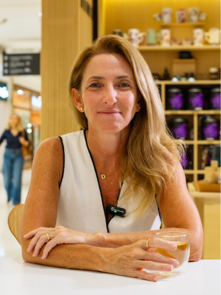
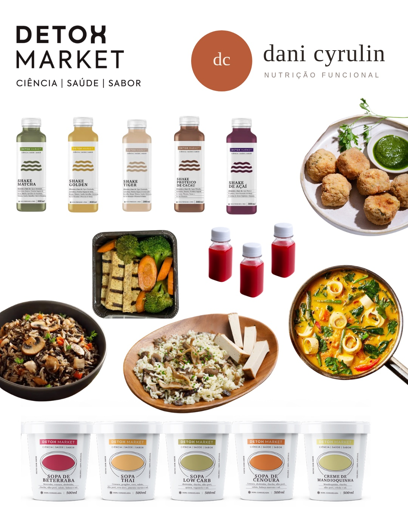
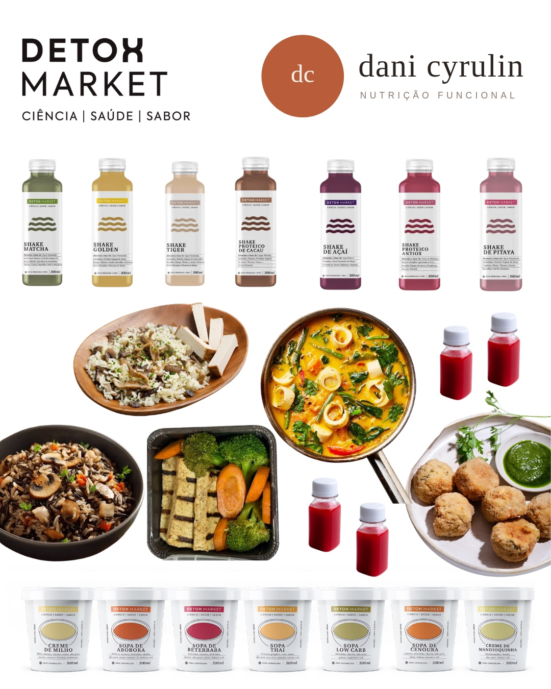
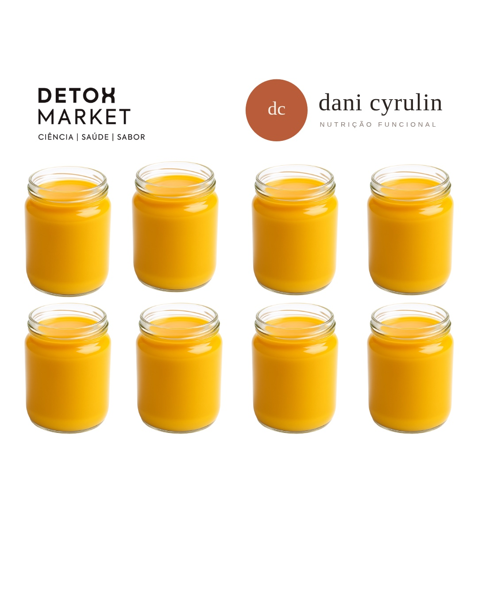
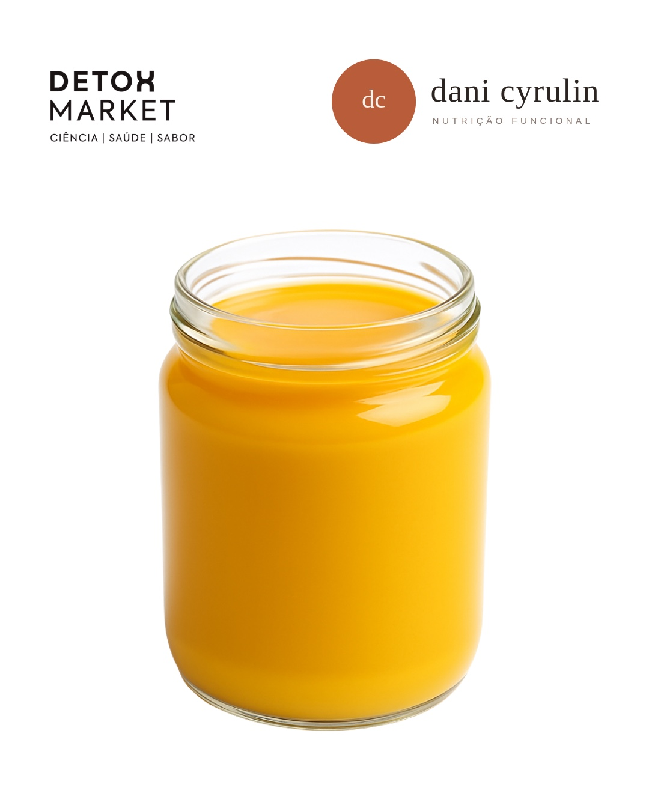

Seu corpo merece começar de novo.
Kits detox e caldos de ossos artesanais criados por Dani Cyrulin após 20 anos de nutrição funcional. Protocolo pensado ingrediente por ingrediente.

Sobre
Dani Cyrulin
Nutricionista funcional com mais de 20 anos de experiência, Dani observou milhares de pacientes inflamados, inchados e sem energia.
Dessa vivência nasceram os alimentos com propósito, começando pelo Kit Detox da Dani e o Caldo de Ossos.
Nossos Produtos
Transforme sua saúde
Escolha o protocolo ideal para o seu momento. Cada kit foi desenvolvido com ingredientes selecionados para resultados reais.

Kit Detox da Dani 5 Dias
Protocolo detox de 5 dias pensado ingrediente por ingrediente para resetar seu organismo. Ideal para quem busca um recomeço rápido e eficaz.
Quero esse Kit →
Kit Detox da Dani 7 Dias
Versão estendida do protocolo detox com 7 dias completos de nutrição funcional. Resultados mais profundos e duradouros.
Quero esse Kit →
Kit Bone Broth 7 Dias
200ml cada pote7 potes de caldo de ossos artesanal (200ml cada) com 15g de colágeno por porção. Rico em aminoácidos e minerais biodisponíveis. Ganhe o oitavo caldo + frete grátis.
Quero esse Kit →
Bone Broth 500ml
Caldo de ossos premium em porção generosa de 500ml. Elixir para o corpo e intestino, perfeito para incluir na rotina diária.
Quero esse Kit →Benefícios
Por que escolher nossos produtos?
Resultados reais que você sente no corpo e na mente desde os primeiros dias.
Menos Inchaço
Reduza a retenção de líquidos e sinta mais leveza no corpo desde os primeiros dias.
Metabolismo Reativado
Seu corpo pronto para emagrecer de forma saudável e sustentável.
Mais Energia
Clareza mental e disposição para encarar o dia a dia com vitalidade.
Intestino Saudável
Melhore o funcionamento intestinal, a base da sua saúde e imunidade.
Pele, Cabelos & Unhas
Colágeno e nutrientes que fortalecem e renovam de dentro para fora.
Sono & Recuperação
A glicina do caldo de ossos promove um sono reparador e profundo.
Como Usar
Dicas Especiais
Confira as melhores formas de incluir nossos produtos no seu dia a dia para resultados incríveis.
Caldo de Ossos
Aqueça suavemente na panela antes de consumir. Confira as melhores formas de incluir o caldo de ossos no seu dia a dia.
Em jejum pela manhã
Comece o dia com um copo de bone broth morno para nutrir o intestino e ativar o metabolismo.
Antes das refeições
Tome 15 minutos antes do almoço ou jantar para promover saciedade e melhor digestão.
Substitua o jantar
Substitua seu jantar por 500ml de caldo de ossos — baixo em calorias, leve digestão e rico em glicina que ajuda no relaxamento e na qualidade do sono.
Como base em receitas
Use no preparo de sopas, arroz, legumes e risoto para enriquecer suas refeições.
Kit Detox da Dani
O protocolo ideal para resetar seu organismo e voltar à rotina saudável.
Para desinchar
Ideal para antes ou depois das férias, depois daquele final de semana de exageros, sempre que sentir que precisa de um estímulo para voltar à rotina.
Shake proteico pela manhã
Tome o shake proteico pela manhã para começar o dia com energia e nutrientes essenciais.
Almoço delicioso & sopa no jantar
Comida deliciosa no almoço e a sopa, leve e nutritiva, no jantar. Um dia completo de alimentação funcional.
Shot de vinagre de maçã com beterraba
Estimule digestão e detox com os shots incluídos no kit para tomar em jejum.